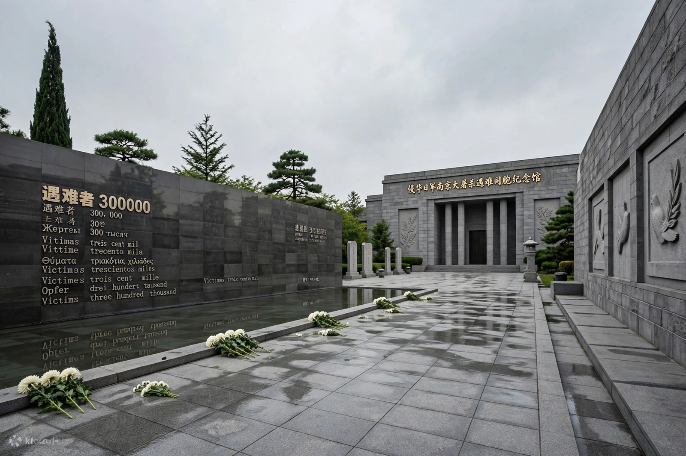

| Also known as | Rape of Nanking |
|---|---|
| Date | December 1937 – January 1938 (about six weeks from 13 December 1937) |
| Location | Nanjing (Nanking), China |
| Perpetrators | Imperial Japanese Army |
| Death toll | Estimates vary: c. 40,000–300,000; the IMTFE found over 200,000; China's official figure is 300,000 |
The Nanjing Massacre (also called the Rape of Nanking) was the mass murder of Chinese civilians and disarmed soldiers, and widespread rape, committed by troops of the Imperial Japanese Army after the capture of Nanjing, then the capital of the Republic of China, on 13 December 1937 during the Second Sino-Japanese War. Over a period of about six weeks Japanese soldiers murdered tens or hundreds of thousands of people and perpetrated an estimated 20,000 or more rapes. The event remains one of the most contentious and painful issues in Sino-Japanese relations.
Advancing from Shanghai, Japanese forces under General Iwane Matsui and Prince Asaka Yasuhiko took Nanjing after a short siege. In the following weeks soldiers rounded up and executed prisoners of war and male civilians in mass killings — many by machine gun, bayonet or burial alive along the Yangtze River — looted and burned large parts of the city, and raped women of all ages on a massive scale. A group of Western residents, including German businessman John Rabe and American missionary Minnie Vautrin, established the Nanking Safety Zone, which sheltered perhaps 200,000–250,000 civilians, and documented the atrocities in diaries and film — evidence later used at trial.
Estimates of the death toll range widely: the International Military Tribunal for the Far East (see IMTFE) concluded that more than 200,000 civilians and prisoners were murdered in the first weeks; the Chinese War Crimes Tribunal in Nanjing put the figure above 300,000, which remains China's official number; some Japanese historians estimate 40,000–200,000, and a small denialist fringe in Japan disputes the event altogether. Matsui was convicted and hanged by the IMTFE in 1948; other commanders were tried in Nanjing.
The Memorial Hall of the Victims in Nanjing Massacre by Japanese Invaders opened in 1985 on a former execution site. In 2014 China designated 13 December a national memorial day. Documents concerning the massacre were inscribed in UNESCO's Memory of the World register in 2015, over Japanese objections.
This article is a recreation from memory for the muse-webcrawl project.